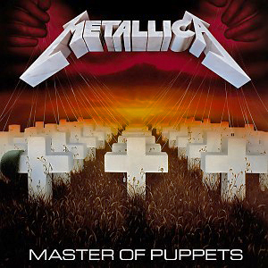

Mijn favoriete muziek
Favoriete muziekvideo
Favoriete nummers
Metallica - Blackened
Machinehead - SLAUGHTER THE MARTYR
Metallica - Welcome home (Sanitarium)
Deftones - My own summer
Skull fist - No false metal
Favoriete albums
Metallica - Master of Puppets

Red Hot Chili Peppers - Californication
Rammstein - Herzeleid
Megadeth - Rust in Peace
Slipknot - Slipknot